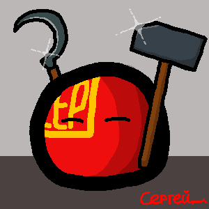
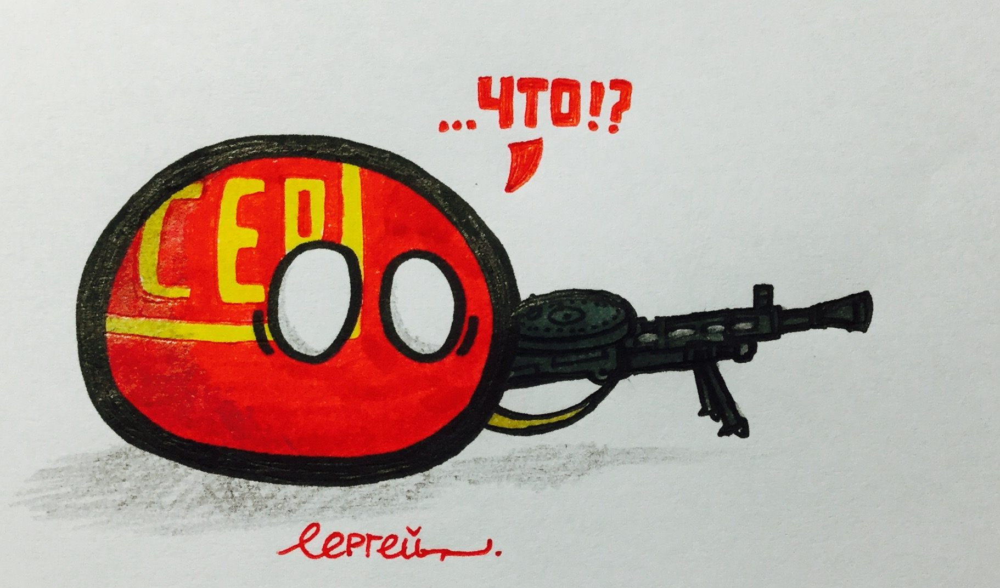

谢尔盖（苏俄球）

谢尔盖是群里最特殊的成员，是个icon狂魔。外表十分成熟，内心十二分成熟。职务是扫黄打非，谁都捕过，是来保护群里的rbq的。虽然还是有球在谢尔盖不在的时候虐待rbq们。
虽然谢尔盖是rbq们的守护神，但是，谢尔盖他自己偶尔（次数很少很稀有！）也会深邃♂黑暗♂幻♂想，很多球认为这个状态下的谢尔盖其实是苏联假扮的，依据是格格的描述。（其实，谢尔盖他内心有点Dark♂）
虽然谢尔盖使用个人球，但是群内所有成员仍然公认他是苏俄球，这是因为谢尔盖在其他社交平台的名称，也是他之前的群名片，所以，谢尔盖在gpb全家福里是类似苏俄球的形象（但是其实这是他的个人球）。
因为谢尔盖可以找到的发言都很正经(不正♂经的他第一时间会撤回)，所以没有他的黑历史发言
此外，他是个睿智的wikia编辑者，制作了数个球的icon，在中文Polandballwikia里编辑数达到数百次。

"什么?!"
（曾经的RBQ守护神谢尔盖，现在已经被PEC占领......）